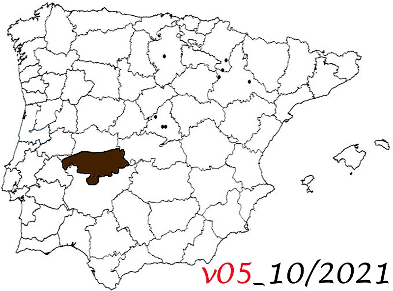
5. Viaje por Extremadura
1 a 4 de octubre de 2021
Día 3, ver Cáceres en un día
3 de octubre de 2021
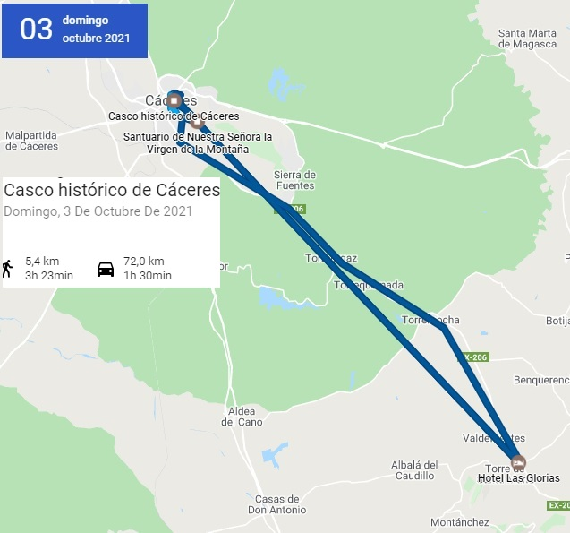
Como plato principal del viaje la visita a Cáceres, que junto con Mérida son ciudades Patrimonio de la Humanidad.
La «Ciudad Monumental de Cáceres» fue declarada por el Consejo de Europa como el Tercer Conjunto Monumental de Europa en 1968 y Patrimonio de la Humanidad por la Unesco en 1986.
La plaza mayor es una de las plazas más grandes de España y de las más fotografiadas.
Cáceres una ciudad amurallada plagada de palacios y de bonitas plazas y altas torres como la torre de Bujaco que da la entrada al casco histórico. La lista de las torres de la ciudad es amplia:
- Torre de Bujaco.
- Torre de los Púlpitos
- Torre Adosada
- Torre del Aire
- Torre del Aver
- Torre de Carvajal
- Torre de las Cigüeñas
- Torre Cotaja o de los Aljibes
- Torre del Horno
- Torre de los Espaderos
- Torre de Mérida este
- Torre de Mérida oeste
- Torre Ochavada
- Torre de los Pozos
- Torre Redonda o de la Mora
- Torre del Rey
- Torre de Sande, en la Casa de los Saavedra
- Torre de Santa Ana
- Torre de la Yerba
Lo más reseñable de Cáceres es la cantidad de palacios en tan reducido espacio y el estado de conservación de los mismos.
La lista de palacios es larga encontrándose:
- Palacio Episcopal
- Palacio de los Golfines de Abajo
- Palacio de Carvajal
- Palacio de las Cigüeñas
- Palacio de las Veletas
- Casa de los Solís o Casa del Sol
- Palacio de los Golfines de Arriba
- Palacio de Toledo-Moctezuma
- Palacio del Comendador de Alcuéscar
- Palacio de la Isla
- Palacio de Francisco de Godoy
- Palacio de la Generala
- Casa de los Ovando
- Casa de los Becerra
- Casa de los Cáceres Ovando
- Casa de los Sánchez Paredes
- Casa de los Paredes Saavedra
- Casa de Lorenzo de Ulloa
- Casa de los Saavedra
- Casa de Aldana
- Casa de los Ovando Perero
- Casa del Mono
- Casa de Moragas
- Casa de los Ribera
- Casa de los Caballos
- Casa de los Pereros
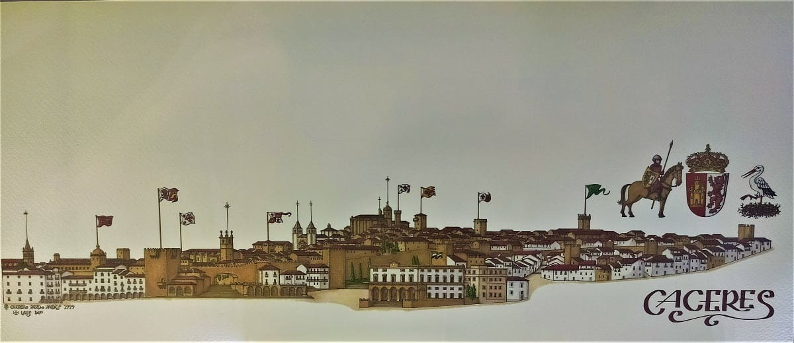
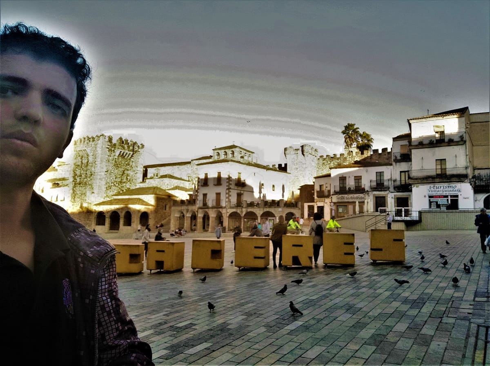
El primer palacio que vería sería
el palacio de Carvajal.
Este palacio fue construido entre los siglos XV y XVI. Cuenta con elementos góticos y renacentistas. Su fachada principal sigue la tipología de los palacios cacereños, de sillería granítica. En el se encuentra la diputación de Cáceres en la que se puede visitar el patio y los jardines.
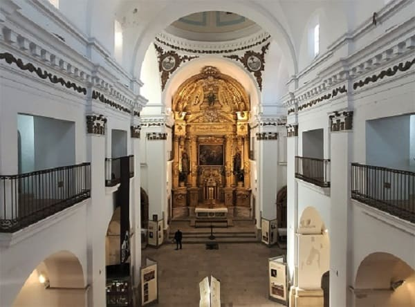
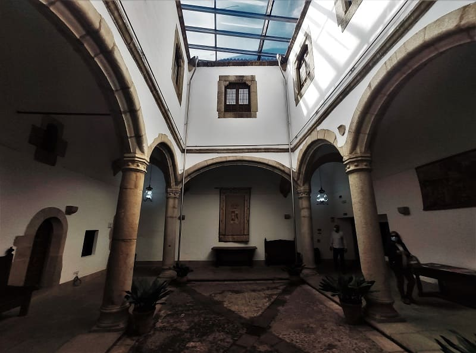
Otro palacio,
el palacio de Hernando Ovando se encuentra en la misma plaza que están los demas edificios,
la plaza Santa María. Es de estilo renacentista como casi todos los palacios de la zona.
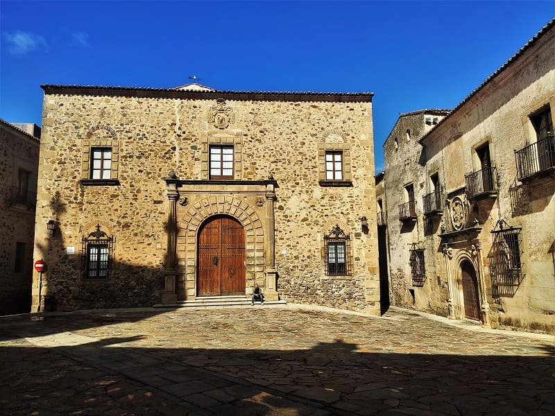
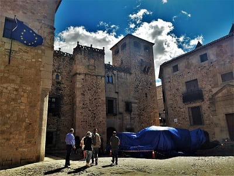
Después seguiría por
el palacio de los Golfines de Abajo que es visitable desde hace no muchos años (el de arriba es un restaurante). Este palacio cuenta con una buena colección de salas neoclásicas. La joya del palacio es la sala de armas del cual al hacer la última reforma se descubrió el artesonado original así como una cantidad de pinturas escondidas tras la última reforma en la que se pinto todo de blanco. Están recogidos todos los blasones y escudos nobiliarios así como retratos de los diferentes marqueses del palacio.

Como iglesias más importantes
la iglesia de San Francisco Javier, iglesia de estilo barroco y una de las más importantes y vistosas de la ciudad, a cuyas dos torres se puede subir y tener las mejores vistas de la ciudad. Es del siglo XVIII de estilo barroco. Esta iglesia se muestra en las imágenes del desplegable de la derecha.
Otra de las iglesias importantes es
la iglesia de san Mateo, del siglo XVI se alza sobre un solar ocupado por una mezquita, otra iglesia cristiana. Templo de estilo gótico y cuya torre termianría de construirse a finales del siglo XVIII. Dispone de un reloj del siglo XVI en su torre. Otro de los palacios imprescindible es
el palacio de las Cigüeñas donde se encuentra el museo de armas de Cáceres. El edificio es del siglo XV y se encuentra en la misma plaza que el palacio de las Veletas, dentro de la fortificación árabe. Esta justo al lado de la iglesia de san Mateo.
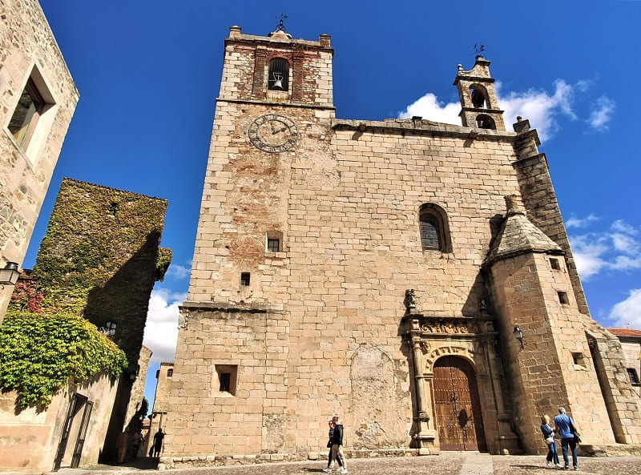
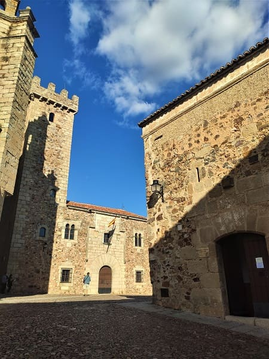
Otro palacio imprescindible es
el palacio de las Veletas donde se encuentra el museo de la ciudad de Cáceres. Este museo ocupa también
La Casa de los Caballos. Es de gran importancia histórica debido a que ocupa el solar donde estuvo el antiguo alcázar almohade, del que solamente se conserva el aljibe, cuya planta es irregular, con, aproximadamente, unos quince metros de largo por diez de ancho, dieciséis arcos de herradura sustentados por doce columnas, algunas de originen romano, formando las cinco naves de bóveda de que consta la construcción.
En el existe una gran colección de arqueología desde el paleolítico, así como etapa romana, visigoda (donde se encuentran los encontrado en la iglesia de Santa Lucía del Trampal vista anteriormente), medievales y más moderno. Además cuenta con sala de exposiciones temporal, en la que había un gran área dedicada a pintura modernista cuando lo visite.
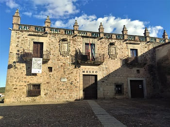
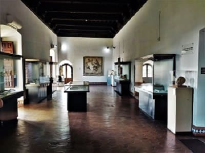
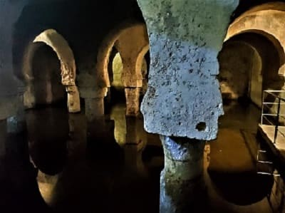
Volviendo a la senda palaciega pasaría por
El palacio de los Condes de Adanero, y a su lado el postigo de Santa Ana. Antigua puerta de la muralla medieval de Cáceres.
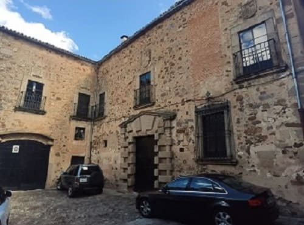
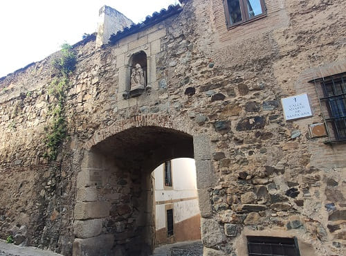
Otro de los palacios, es
el palacio del comendador de Alcuescar, cerca del parador nacional de cáceres, del siglo XIV. El aspecto actual de la fachada es de estilo neoclásico del siglo XVIII y se llevarían a cabo por los descendientes del Comendador. En la decada de los 80 se convetiría en
Parador Nacional, junto con la Casa de los Ovando vista en anterior imagen, que se encuentra en el otro lado del edificio.

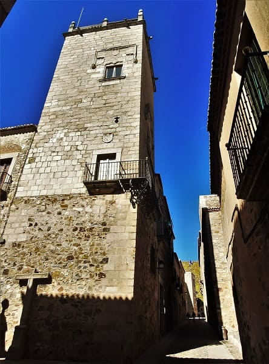
Cerca del se encuentra
el convento de Santa Ana, el palacio de la generala y la casa Sanchez Paredes.
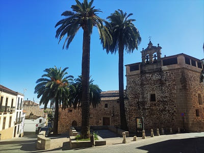
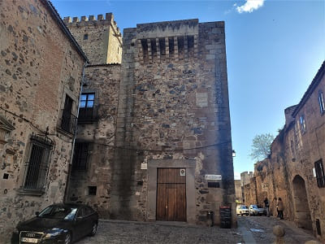
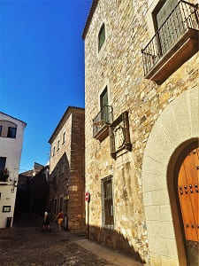
La judería es uno de los barrios más antiguos de Cáceres, se encuentra en el barrio de San Antonio, llamado asi porque se encuentra
la ermita del san Antonio y esta dentro de la muralla. En el esta
la casa de Durán Rocha y una casa museo árabe que recrea el estilo de las casas moriscas que hubo en este barrio.
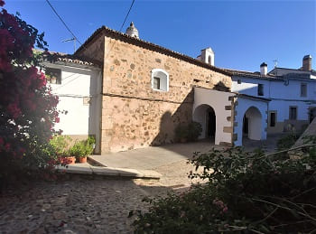
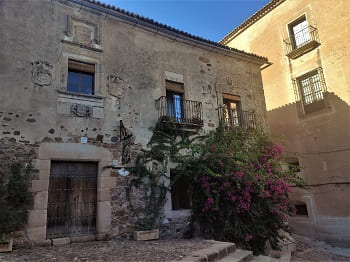
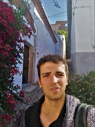
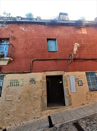
Paseando alrededor de la plaza Santa María, encuentro sitios tan emblemáticos como
palacio de Montezuma, la iglesia de san Juan, la casa Andana Sol.
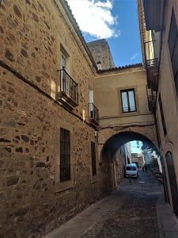
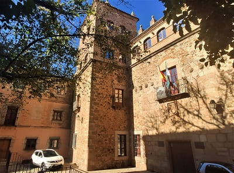
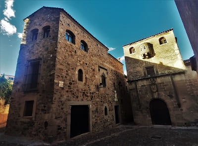
Yendo hacia el este podemos volver a la Plaza Mayor de Caceres, donde se encuentra la torre de Bujaco y da acceso a la muralla donde se puede recorrer un pequeño tramo.
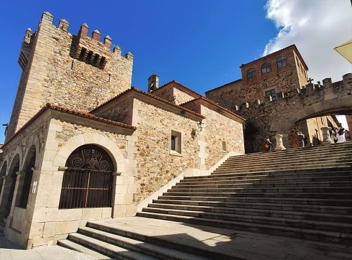
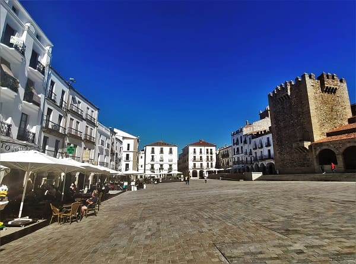
Ya por la tarde visitaría
la concatedral de Santa María. La concatedral es el más importante templo cristiano de la ciudad de Cáceres. Indica José Ramón Mélida que es el de más antigua fundación en la ciudad, pues se completó entre los siglos XV y XVI sobre una construcción del siglo XIII de maneras mudéjares y techo de madera. Destaca su retablo plateresco de madera al estilo extremeño sin pintar. También la capilla de los Blázquez o del Santísimo Cristo contiene la talla del Cristo Negro de Cáceres, un crucifijo gótico del siglo XIV.
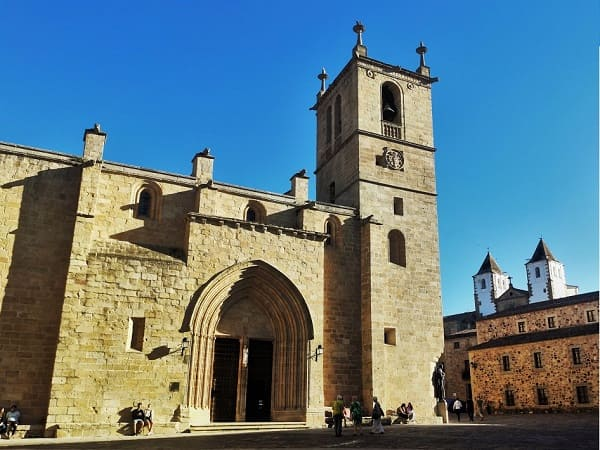
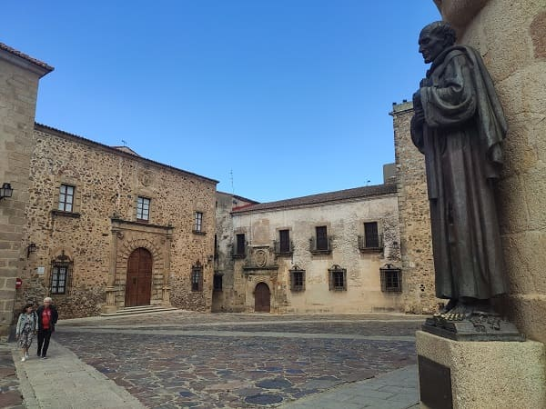
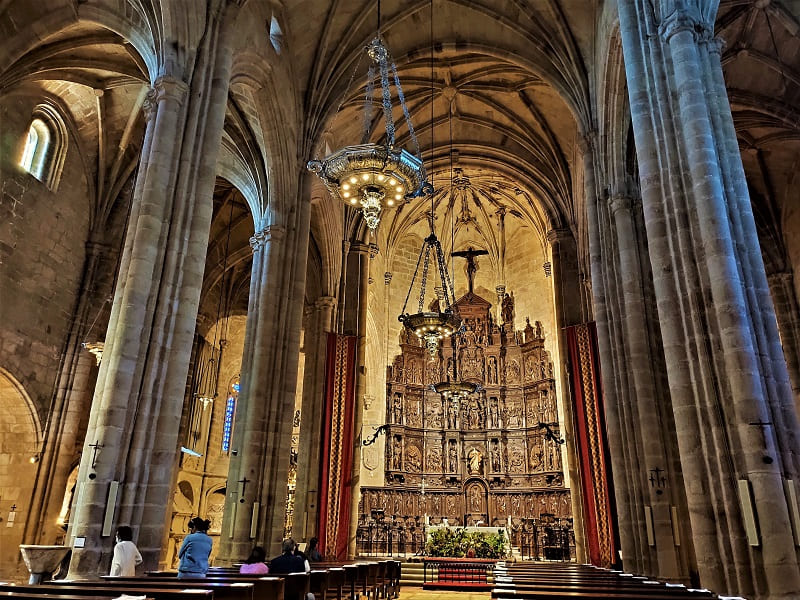
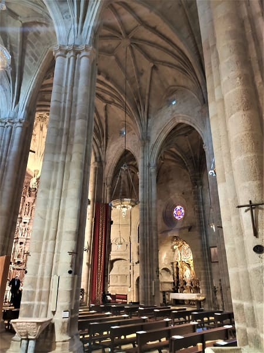
Fuera del recinto de la muralla hay otros palacios como
el palacio de Galarza y el del marques de Camarena, con grandes escudos y más grandes que varios del centro. Ambos fueron construidos en el siglo XV y son de estilo renacentista.
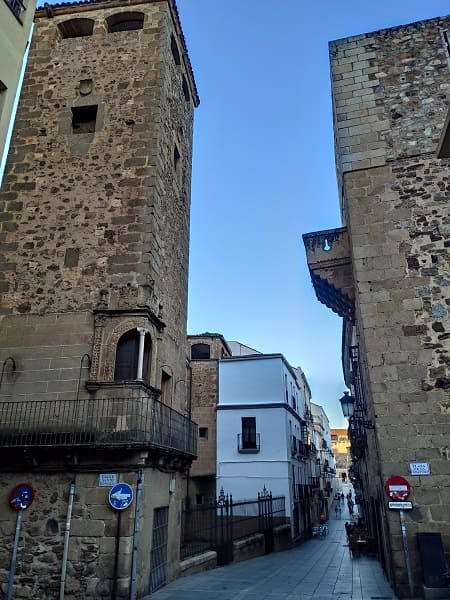.
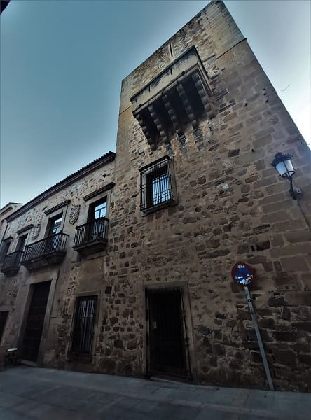.
También edificios religiosos cerca como
La iglesia de san Juan se encuentra cerca, de estilo gótico del siglo XIII, que se iría transformando más que otras iglesias y acabaría de construirse en el siglo XVIII. Debido a que se encontraba cerca de los mercados populares de ganadería se le llamaba San Juan de los ovejeros. No muy lejos se encuentra la iglesia de Santiago.
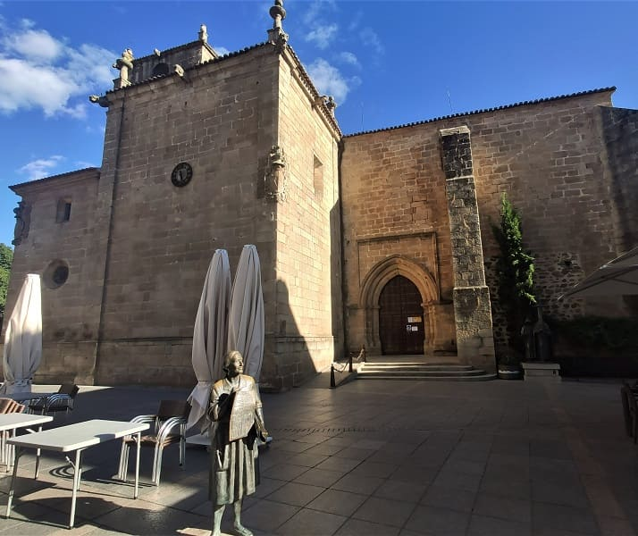
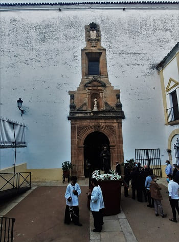
Otra iglesia fuera del recinto amurallado son
la iglesia de santo Domingo en la que justamente el día en la que visitaba estaba de procesión y
la iglesia de santiago.
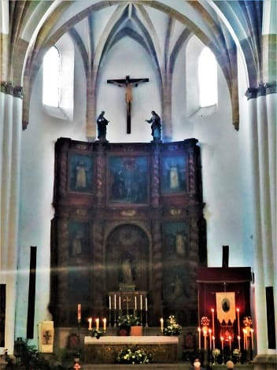
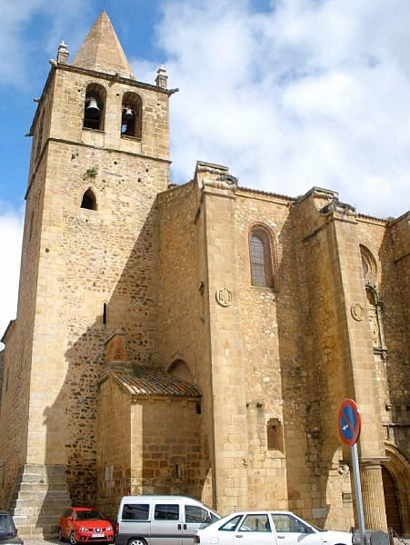
En las afueras de la ciudad subí ya al finalizar la tarde para ver la puesta de sol desde
el santuario de la virgen de la Montaña. Este emplazamiento tiene las mejores vistas de toda la ciudad de Cáceres.
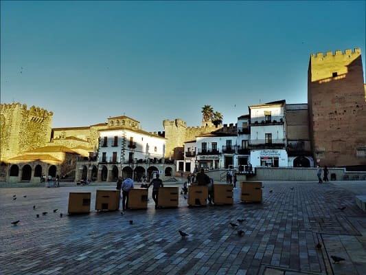
Plaza Mayor, recinto amurallado y palacetes, s.XV.
7
Día 4, de Medellin a Toledo (CLICK para continuar)
4 de octubre de 2021
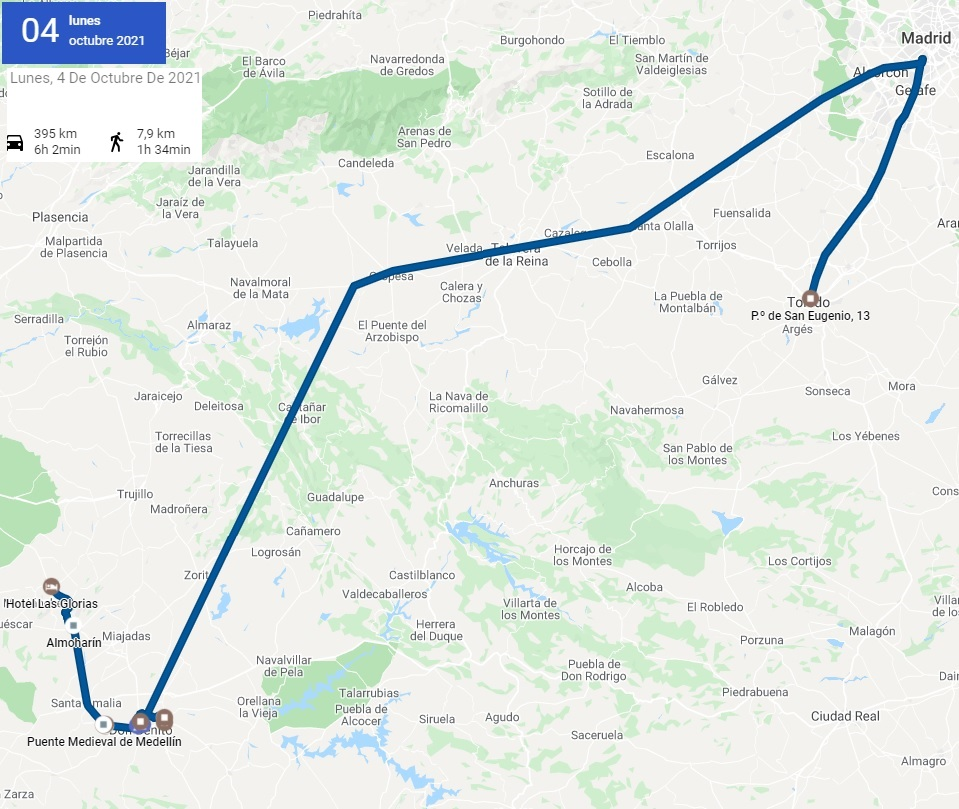
![[Valid RSS]](https://www.onepointsync.com/wp-content/uploads/2016/08/valid-rss-rogers.png "Validate my RSS feed")